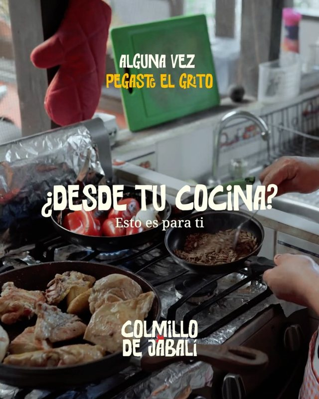
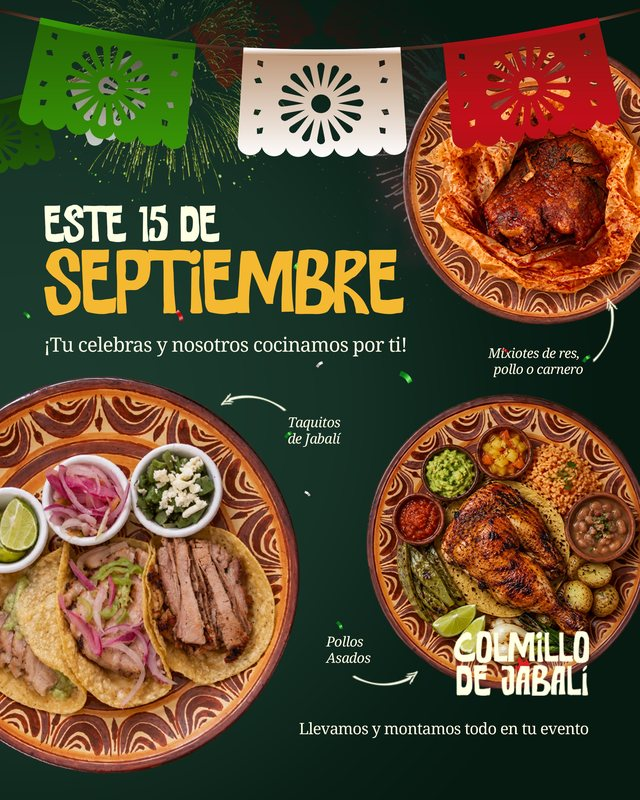
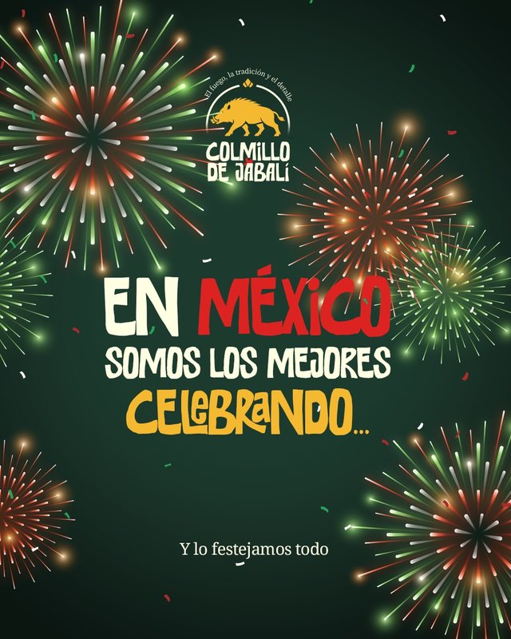
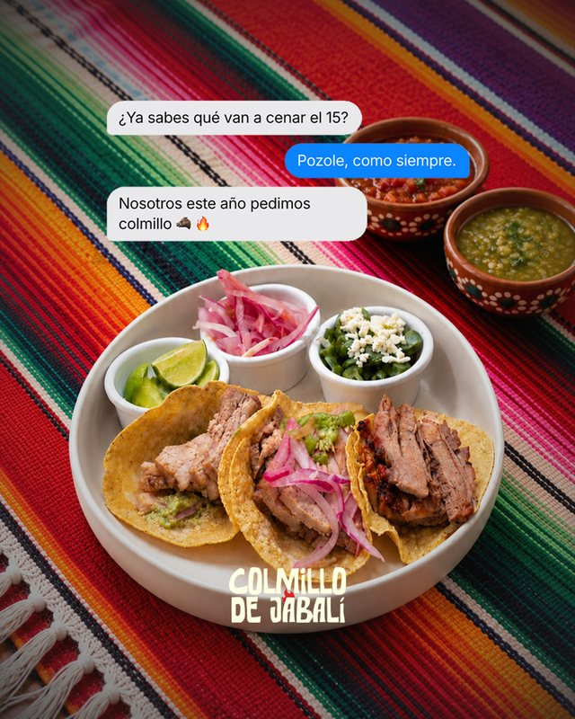
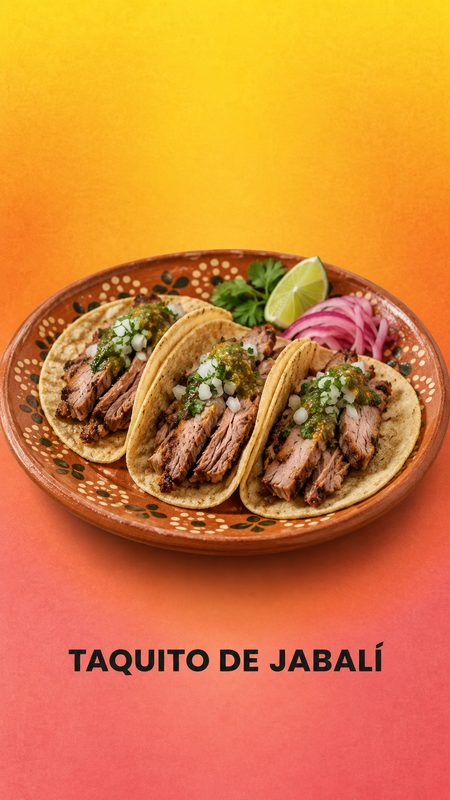
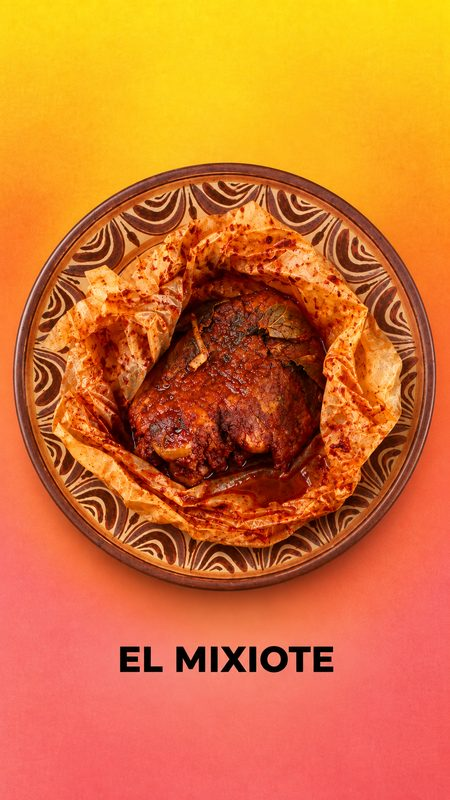
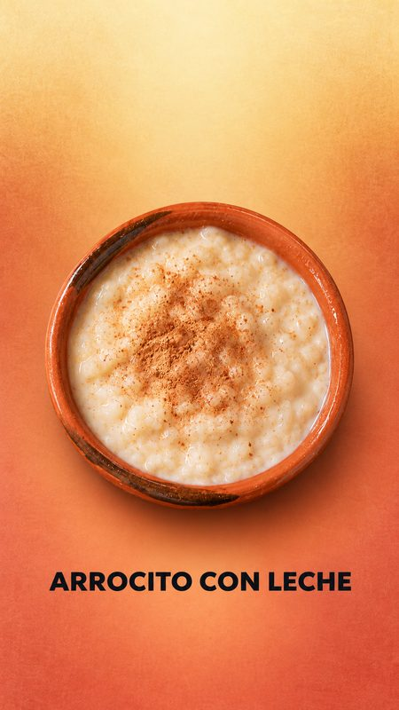
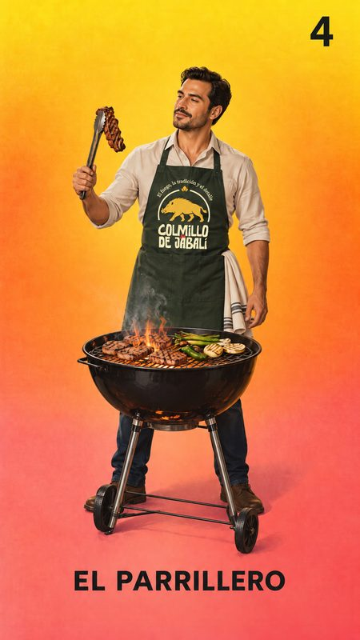

Reporte mensual de desempeño
Agosto 2026
Colmillo de Jabalí · Instagram y TikTok
La llama y la letra marcan cada uno de los diez indicadores del contrato, de la a a la j.
Personas alcanzadas
4,124
En Instagram, 63 de cada 100 no nos seguían.
Impresiones generadas
5,968
Reproducciones de video
5,420
El formato de video tomó la delantera este mes, con el 90% de todas las visualizaciones.
Seguidores ganados
+20
Tasa de interacción
16.3%
Instagram · 102 interacciones
sobre 624 personas
En TikTok, 107 interacciones sobre 3,500 personas.
Publicaciones
20
5 reels, 15 posts y carruseles, y 8 historias. Cada pieza la replicamos en TikTok.
Alcance diario en Instagram
Del 1 al 31 de agosto, día por día
Cinco días se llevaron la mayor parte del alcance del mes.
De dónde llega la gente en TikTok
Origen de las reproducciones
Nueve de cada diez reproducciones llegan del algoritmo, no de quien ya nos seguía. Eso es gente nueva, que es justo lo que le pedimos a TikTok.
Alcance por publicación en Instagram
En orden de publicación
En el propio listado de Instagram, los cinco reels ocupan los cinco primeros lugares del mes.
Retención de reels
Reproducciones que pasan de 3 segundos
Vistas por formato
Las 8 historias nos dieron 170 vistas: casi la mitad de lo que dieron los 12 posts, con un tercio de las piezas.
Qué buscó la gente
Búsquedas que llevaron a nuestro contenido
Dos de las cinco búsquedas son de Tula, semanas después del festival: el evento nos sigue trayendo gente. Y alguien llegó buscando costillar jabalí, que es justo el diferenciador que estamos empujando.
Instagram · interacciones
TikTok · interacciones
Contacto, inversión y plan
Mensajes
El conteo de mensajes directos y consultas se incorpora a partir de este mes.
Clics al perfil, sitio y WhatsApp
132 personas entraron a ver quién publicaba.
Campañas publicitarias
Sin inversión en agosto
Todo el resultado del mes es orgánico. La pauta ya está definida y empieza en cuanto nos compartan la inversión, para impulsar al máximo las redes y contabilizar inversión, costo por resultado, CPC y CPM.
Publicaciones destacadasi

🍬 Tu banquete, con colmillo. Al cierre sale un bowl grande de dulce mexicano: Pelón Pelo Rico, Lucas Muecas, Rocaleta, Miguelito, mangos enchilados y tamarindos.

Llevamos todo el colmillo. 🔥 Este fin de semana montamos la parrilla en Tula Beer Fest, con costillar de jabalí, pollo asado y mucho más. Se cocinó ahí mismo, frente a todos.
🔥 Ya tienes todo para tu noche mexicana. Nosotros llevamos lo del centro de la mesa 🐗: la parrilla llega a tu evento, el carbón se prende ahí, y de ahí sale el colmillo.
Menor desempeño, y qué corregimos

El arranque es la palanca. Se quedó en 11% contra 21% del promedio, y los reels que abren con el producto en el primer segundo aguantan el doble. Eso corregimos.

El mismo tema que arrasó en TikTok nos dio 35 vistas como carrusel. No es el tema: es el formato y la red.
Qué nos dicen
Lectura del mes
- Lo que grabamos en evento real es lo que atrae. Las publicaciones más vistas salieron de Tula Beer Fest o del producto ya servido.
- La barra de dulces es nuestro mejor gancho, pero solo en video. 580 vistas en TikTok contra 35 como carrusel en Instagram.
- TikTok es la red que nos está abriendo la puerta. Nueve de cada diez reproducciones llegan de gente que no nos conocía.
Plan de septiembrej
Septiembre es el mes en que se cotizan las fiestas de fin de año
Quien organiza una posada, una cena de empresa o una boda de noviembre está pidiendo cotizaciones ahora. Es el mes con más intención de compra del trimestre, aunque no haya un solo festival en el calendario. El contenido se orienta al banquete privado y cada pieza cierra pidiendo una fecha.
El mensaje se amplía: de sirven jabalí a arman la experiencia completa
Agosto logró lo más difícil, que el jabalí quedara pegado al nombre. El riesgo ahora es quedarse ahí, cuando hay cuatro barras, montaje, servicio en el lugar y postre. Septiembre se enfoca en los temas relevantes para vender, no únicamente en el jabalí.
El sazón, no solo el jabalí
Nos centraremos en mostrar no solo el jabalí como parte de los platillos, sino en explorar el diferenciador de por qué nuestros platillos tienen un sazón distinto y por qué son mucho más sabrosos que otros. Para eso necesitaremos su apoyo con la información de preparación de los platillos.
Más video, con el mismo número de contenidos
Seis reels en lugar de cuatro y diez publicaciones en lugar de doce. El total no se mueve: siguen siendo 24 contenidos. Sin festivales el alcance baja, y el video es el formato que sigue llegando a quien todavía no conoce la marca.
Las historias dejan de informar y empiezan a preguntar
En agosto eran versiones chicas de las publicaciones. En septiembre son encuestas: ¿ya probaste jabalí?, ¿qué barra elegirías?, ¿qué estás celebrando? Cada respuesta es una persona levantando la mano, y la última lleva directo al mensaje.
Metas de septiembre
Plan de septiembre
El calendario completo del mes, pieza por pieza, con fechas y formatos.
Cierre del proyecto
Agosto y septiembre 2026
Colmillo de Jabalí · Lo que planeamos, medimos y publicamos
Seis semanas de trabajo
Del primer reel, el 30 de julio, al último carrusel, el 8 de septiembre: construimos la estrategia, medimos cada mes siguiendo lo contratado y publicamos en Instagram y TikTok.
25
publicaciones en el feed, entre agosto y septiembre
24
contenidos planeados para septiembre, con fecha y formato
10
indicadores del contrato, medidos en el reporte
La planeación
Cuatro objetivos
Cinco pilares de contenido
Tres públicos
Septiembre, pieza por pieza
El calendario que planeamos: 24 contenidos en 30 días
Cómo se repartía
Los 24 contenidos del plan
7
reels
9
carruseles y posts
8
historias
Las 16 piezas de feed, por pilar
Septiembre no tenía festivales y es el mes en que se cotizan las fiestas de fin de año, así que el banquete privado llevó la mayor parte.
El reporte de resultados
Lo que construimos
Un reporte web que mide los diez indicadores del contrato, con gráficos que muestran el dato al pasar el cursor y cada publicación enlazada a su original.
- Los diez puntos del contrato, de la a a la j, cada uno marcado con su letra.
- Alcance día por día, alcance por publicación, retención de reels y de dónde llegan las vistas en TikTok.
- Las publicaciones con mejor y menor desempeño, con lo que corregimos en cada caso.
Lo que midió agosto
Primer mes completo en Instagram y TikTok
4,124
personas alcanzadas
5,968
impresiones
5,420
reproducciones de video
+20
seguidores ganados
16.3%
tasa de interacción en Instagram
91.9%
de las vistas de TikTok llegaron por Para ti
- Lo que se graba en evento real es lo que atrae. Las piezas más vistas salieron de Tula Beer Fest o del producto ya servido.
- TikTok es la red que abre la puerta. Nueve de cada diez reproducciones llegaron de gente que no nos seguía.
Las cinco publicaciones de septiembre
🔥 ¡Septiembre trae el Grito con Colmillo! Llegamos con la parrilla al lugar de tu evento y prendemos el carbón ahí. Tú recibes a los invitados; de lo demás nos encargamos.

🔥 El 15 todos van a estar en la misma mesa. En tu jardín, en tu patio o en el salón que hayas rentado, con el costillar de jabalí saliendo de la parrilla.

🔥 Prendemos el carbón en el lugar de tu fiesta. El costillar se deshebra ahí mismo y las tortillas de maíz salen del comal a la mesa.
Solo en Instagram

🔥 Cualquier pretexto es bueno. Boda, bautizo, XV, posada o la carne asada del domingo: llevamos la parrilla y cocinamos enfrente de tus invitados.

🐗 Se pueden tener las dos cosas. El 15 llegamos con la parrilla, cocinamos enfrente de tus invitados y tú nada más te sientas con la familia.
Vistas por publicación
Instagram y TikTok, del 1 al 9 de septiembre
Qué nos dijo septiembre
Lectura de las cinco piezas
- El video sigue abriendo la puerta. El reel del 1 de septiembre sumó 772 vistas y alcanzó a 112 personas en Instagram, más que las otras cuatro piezas juntas.
- En TikTok, el carrusel también atrae. El del 7 llegó a 579 vistas; en Instagram, a 26. Es el mismo patrón que vimos en agosto con la barra de dulces.
- TikTok cargó el mes. Ocho de cada diez vistas de septiembre llegaron por ahí.
Historias de septiembre
La historia del 9, lista para subir
Realizada, no se alcanzó a publicar
Cuatro pantallas con lo que se sirve: el taquito de jabalí, el mixiote y el arrocito con leche, y cierra con el parrillero. Quedan listas para que la publiquen cuando quieran.
La historia del 4 de septiembre sí se publicó.




Lo que queda con ustedes
Todo queda documentado
Si continúan por su cuenta
- Sostengan el video. En los dos meses, los reels y TikTok trajeron a la mayor parte de la gente nueva.
- Graben en cada evento. Lo que mejor funciona sale de un evento real o del producto ya servido.
- Aprovechen la temporada. De septiembre a noviembre se cotizan posadas, cenas de empresa y bodas de fin de año.
Gracias por la confianza
Fue un gusto llevar el fuego de Colmillo de Jabalí a sus redes. En el tablero están la estrategia y el plan completo de septiembre.